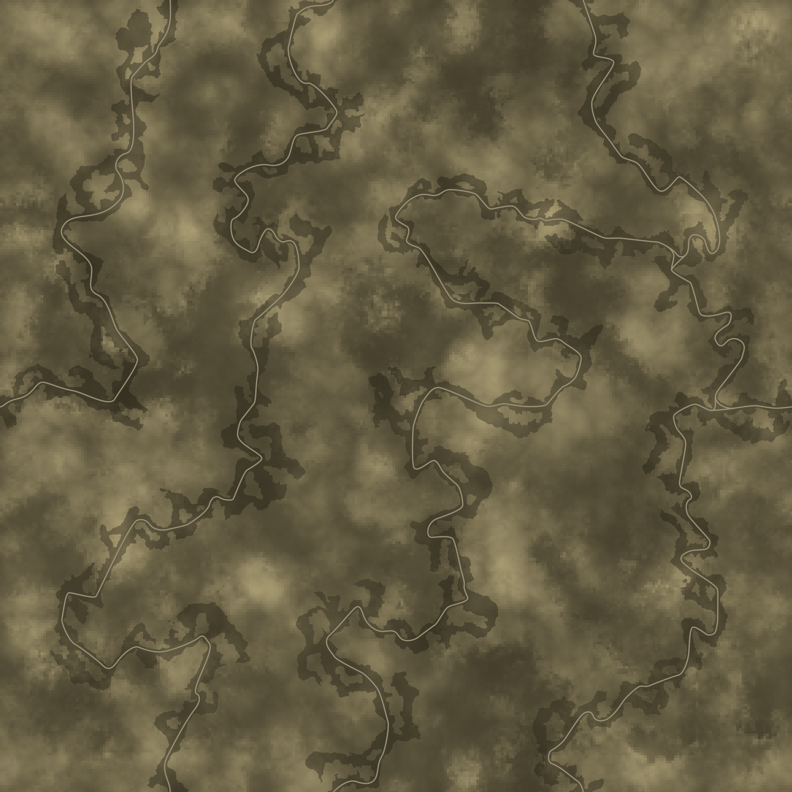
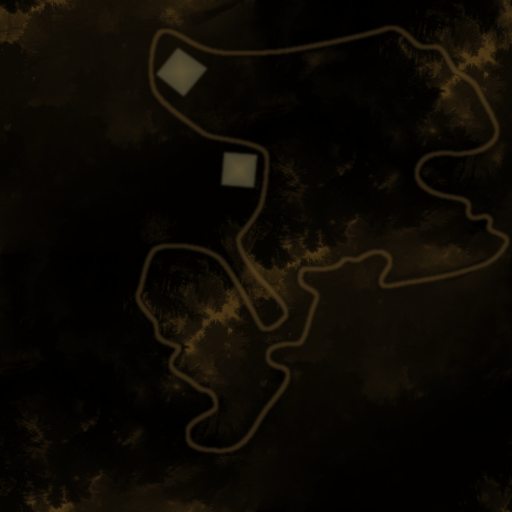
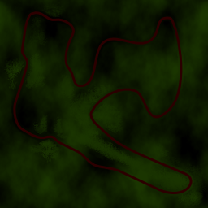

Feel the surface
Wheel grip and ground contact shift with the terrain. A clean line starts with reading what’s under you.
Independent rally game · Linux demo available
The road is never the whole story. Read the ground, trust the wheel, and make every corner yours in a rally game built around the feel of the drive.
The current demo opens the “Ahead” route. See what’s included
TrackRS is about the small decisions that make a big difference: when to brake, where to place a wheel, and how much you can ask from the surface beneath you.
Built as an independent project by Saad AIT YAHIA, TrackRS brings together rally cars, winding routes, and terrain that changes how the car responds. Gravel, mud, snow and rock are more than scenery. They are part of the conversation between you and the road.
Take a look aroundWheel grip and ground contact shift with the terrain. A clean line starts with reading what’s under you.
Follow checkpoints through open landscapes, tight turns and long stretches that reward a steady hand.
Choose a camera, tune your controls, or plug in a joystick. The cockpit should feel like your own.
From rally-bred WRC machines to lighter kitcars and Super 500 builds, the garage gives you a different way to meet the same road.
THE LINEUP
Nine vehicle definitions are included in the game data. The current demo is focused on one route: Ahead.
Every route asks a different question. Explore the wider TrackRS map library, then start with the route available in this demo.

One long road to settle into. The place to learn the rhythm of TrackRS.
Start here
Open ground. A long horizon.

A different kind of grip.
Map library art shown from the game data. The included demo currently unlocks the Ahead route only.
The default keyboard layout gets you moving quickly. Change views, check the map, recover at a checkpoint, and get back on the line.
TrackRS is an independent game project built by people who care about the feeling of a good drive, the details of a world, and the freedom to make something their own.
Creator and developer of TrackRS. Building the game, shaping its feel, and bringing this independent rally project to life.
Follow the workDesign lead, shaping the visual language and helping TrackRS feel like a world with a point of view.
A key part of the TrackRS teamTrackRS demo · version 0.6.7
Take the wheel on Ahead, get a feel for the terrain, and see what this independent rally project is all about.
Debian / Ubuntu compatible package
Download for LinuxTrackRS demo · 0.6.7Want to build from source? Visit GitHub ↗The current demo build unlocks the Ahead single-race route. Other events, practice races and maps remain locked in this build; the wider map and vehicle counts describe the game data, not demo access.
Arrow keys drive and steer, Space is the handbrake, C changes camera, M toggles the map, R recovers the car, Q recovers to the previous checkpoint, and P pauses.
TrackRS is released under GNU GPL version 2. Some bundled game data has separate authors and license terms; check DATA_AUTHORS.txt in the source repository.